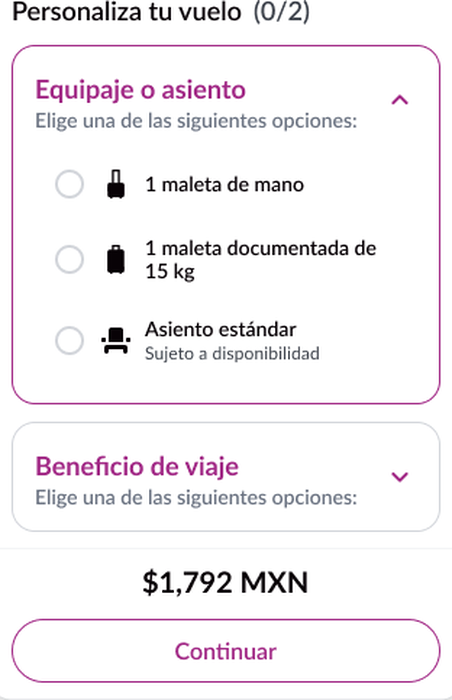
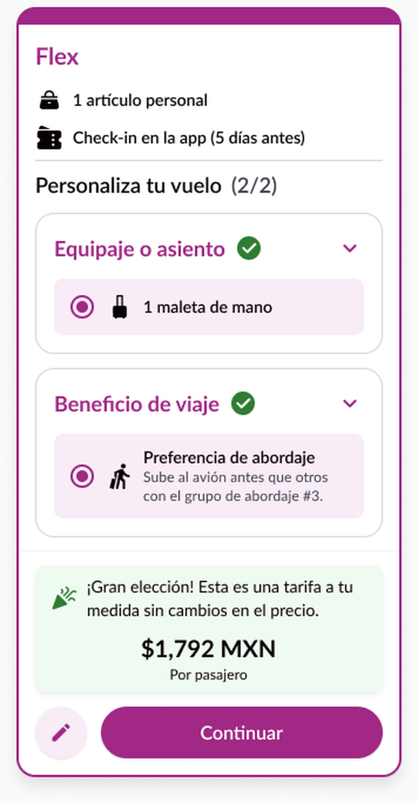
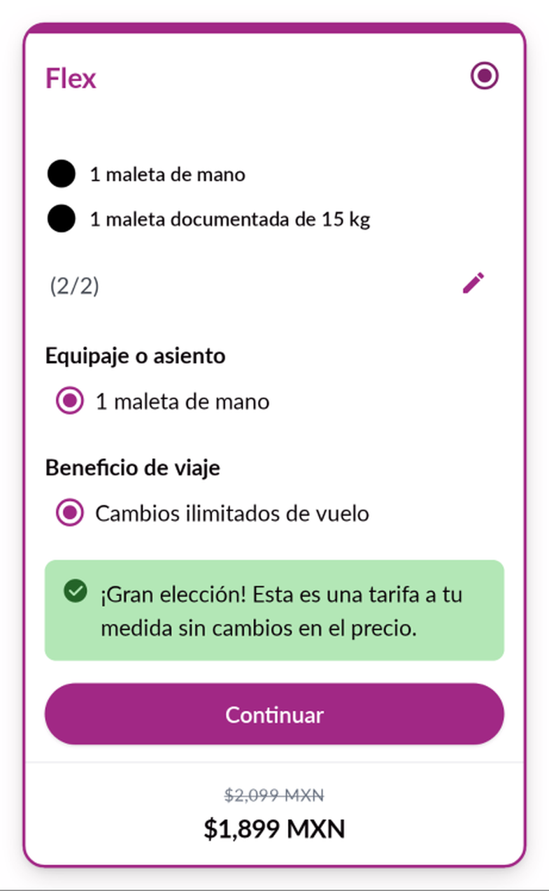
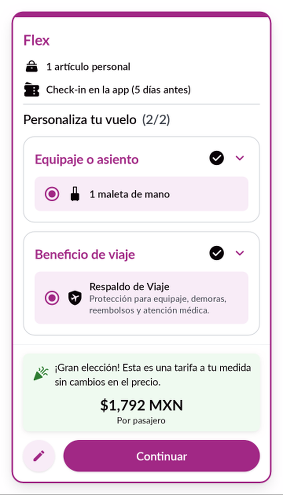
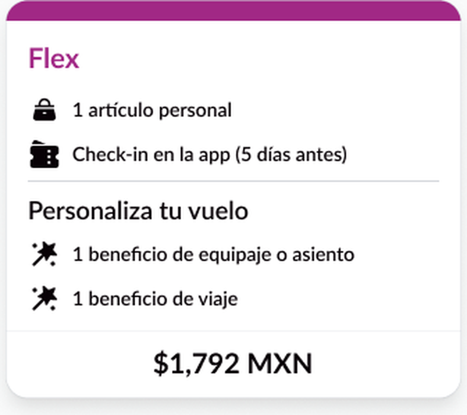
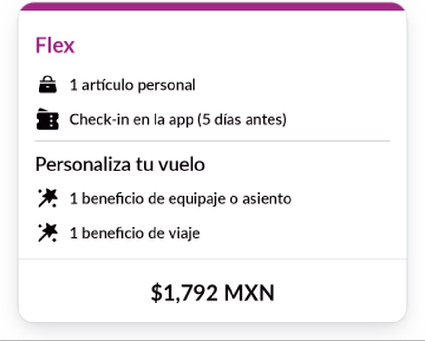

Diseño Applaudo · Volaris · Fare Flex Android
Qué cambiamos en el contrato, qué tan cerca quedó la segunda corrida del diseño y qué necesitamos de ustedes.
El contrato
Antes le dábamos al equipo una descripción general y quedaban dudas; ahora le damos medidas exactas de cada estado, de dónde sale cada texto y reglas de qué no inventar.
Ejemplo · Selector de la tarjeta Flex

1 2 3 4 5 6«Un título y tres opciones para elegir». Caja, tamaños, íconos y datos: sin definir.
Cómo se arma ahora
Si a la construcción le falta algo, el agente lo anota y sigue. No inventa.
Resultado de la corrida 2
Las mismas 32 diferencias que encontramos en la primera corrida, revisadas otra vez contra Figma.
Ya se ven como en Figma.
Mejoraron, pero falta un detalle.
Faltan una medida del diseño y la pantalla «cargando».
Lo cambiamos por decisión.
3 de 8 revisiones automáticas ya pasan. En la primera corrida no pasaba ninguna.
Una pantalla, tres versiones



Todas las pantallas

Figma
Corrida 2Pantalla larga: desplázate dentro de las imágenes para ver el resto ↓ · Clic para verla completa
Cómo lo ejecutamos
Una copia aparte del proyecto, el contrato congelado y, al final, la medición contra Figma.
Tiempo y costo
de trabajo del agente, en tres tramos.
costo de referencia que reporta la herramienta; lo cubre la suscripción.
intervenciones humanas: arranque, cortes y cambio de modelo.
preguntas de diseño a mitad de camino. En la corrida 1 fueron 3.
Corrida 1: unos 108 min y al menos 20,79 USD, pero sin costo medido en 3 de sus 5 tramos, así que los totales no se comparan directamente. El último tramo de la corrida 2, con un modelo más económico, costó 6,61 USD.
Antes de seguir
Las pantallas se ven bien, pero falta conectarlas bien a los datos reales y probarlas en un teléfono.
En la app real, la tarjeta del medio todavía recibe la información de Basic.
El selector y el paso de Zero a Flex no están conectados a ninguna pantalla.
Comparamos capturas de pantalla; la app instalada quedó fuera de esta corrida.
Lo que decidimos para la versión 2.1
Cada dato con respaldo se usa de verdad en la app, con una prueba que lo confirma. Y una regla clara para cuando no llega Flex.
Las capturas de prueba se toman al mismo ancho que Figma, para comparar medida por medida.
Ya decidido por Adonay: la tabla de comparación de Zero a Flex y el paso de Flex a Plus entran en la versión 2.1. La tabla salió distinta porque no estaba en el contrato y se armó con datos de prueba; por eso ahora se sella celda por celda.
Qué les pedimos
Próximos pasos
Fernando y Harold: franja de la tarjeta y sombra del lápiz.
Con la tabla celda por celda, el paso a Plus, la conexión y la medición al ancho de Figma.
La misma funcionalidad, solo con el contrato firmado.
Probar con datos reales, no solo con capturas.
Cerrar las 7 diferencias que siguen abiertas o a medias.
Diseño Applaudo · Volaris
Gracias · Preguntas
Anexo
COMPARACION-R2.md §1 (32 diferencias), §3 (P1–P8), §5 (tiempo y costo), §7 (cambios al contrato)METRICS.md (estado de borrador, capturas)INTERVENTIONS.md (#0–#8)KICKOFF-R2.mdpack-v2-snapshot/DISAGREEMENTS.md